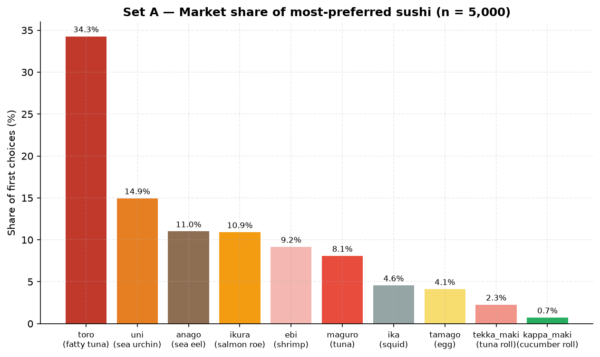
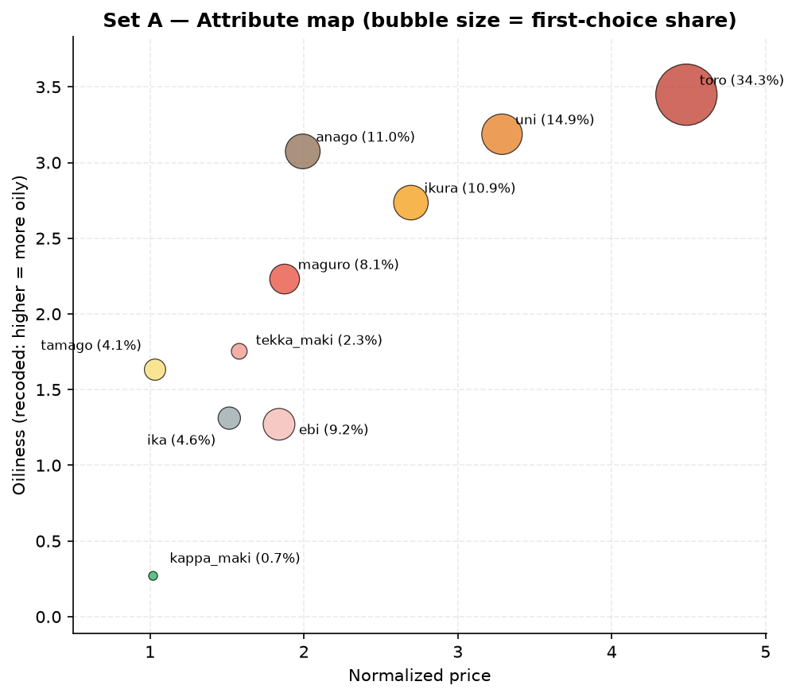
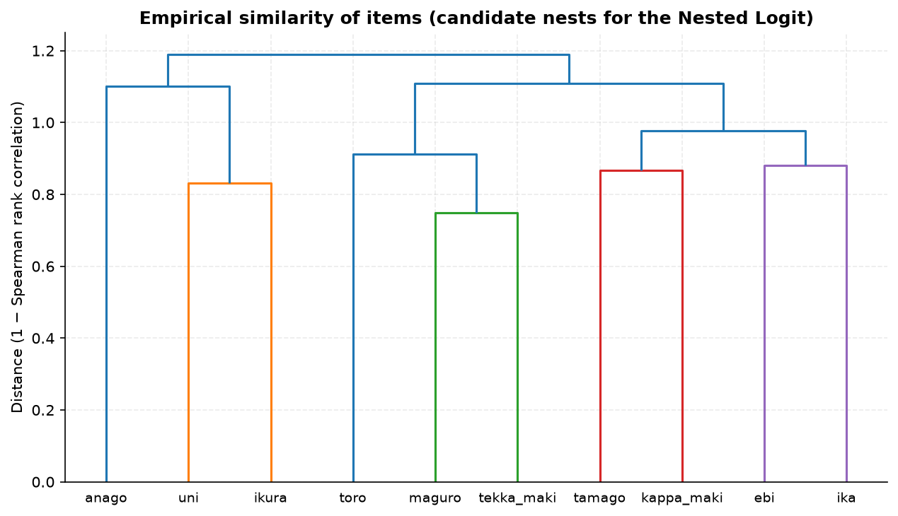
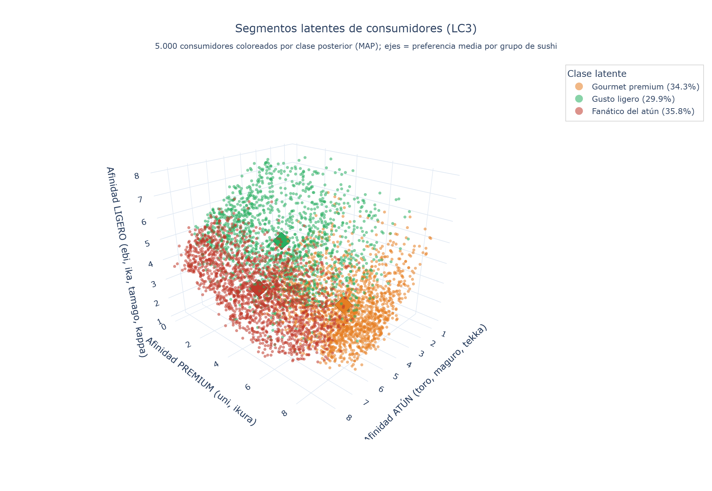
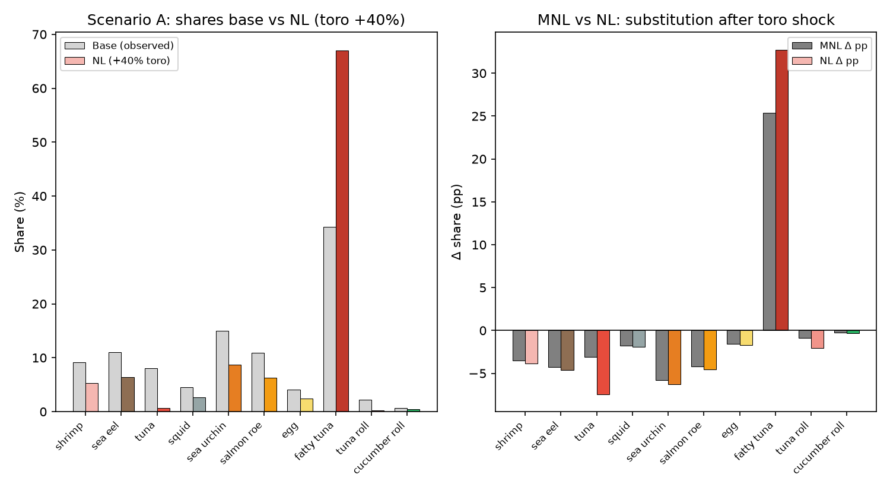
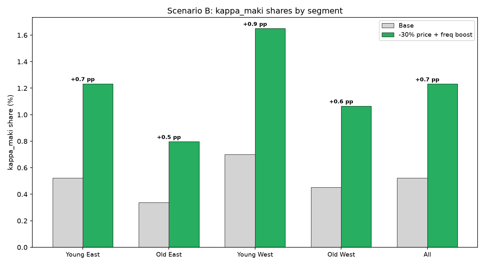

Un recorrido visual por los 10 tipos de sushi del estudio y por los tres modelos de elección discreta que revelan cómo eligen —y por qué— 5.000 consumidores reales.
Explorar los sushis →Cada consumidor ordenó estas 10 variedades de la más a la menos preferida. Ordenadas aquí por su cuota de primera preferencia (share).

Un modelo de elección discreta traduce las decisiones observadas en preferencias medibles. Usamos tres, cada uno responde una pregunta distinta.



Traducidos a lenguaje de negocio, sin ecuaciones.
Contra la intuición económica, lo más caro es lo más elegido: el precio actúa como señal de estatus (Efecto Veblen). β = +0,58
A mayor edad, más utilidad del sushi graso (toro, anago), aun controlando el gusto medio. β = +0,089
El Oeste de Japón prefiere sabores ligeros; el Este, los grasos e intensos. Una brecha cultural real y medible.
Si falta el toro, la demanda migra a otro atún (maguro, tekka), no a un sushi cualquiera. λ = 0,32
El mercado se divide en gourmets premium, paladares ligeros y fanáticos del atún, de tamaños casi iguales.
Usando el modelo, simulamos intervenciones de mercado y medimos su impacto.
Un alza de +40%. Por el efecto Veblen, encarecerlo lo hace aún más deseado, y canibaliza a sus vecinos de nido.

Rebaja de precio + más disponibilidad del rollo de pepino. Lo que mueve la aguja es la disponibilidad, no el precio.

Descubiertos por el modelo de clases latentes. Cada uno pide una estrategia distinta.